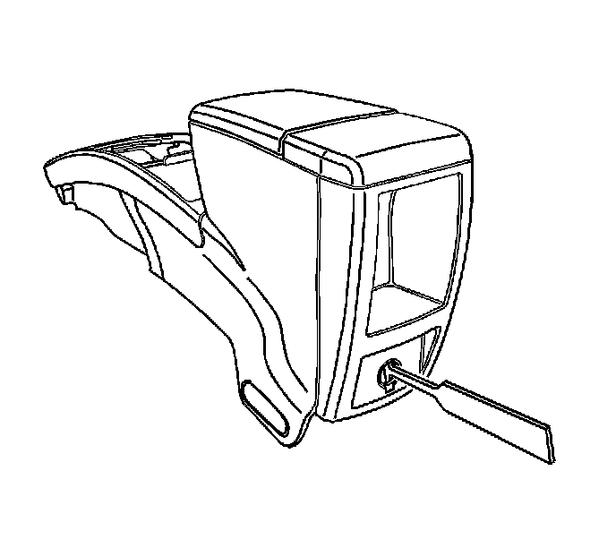
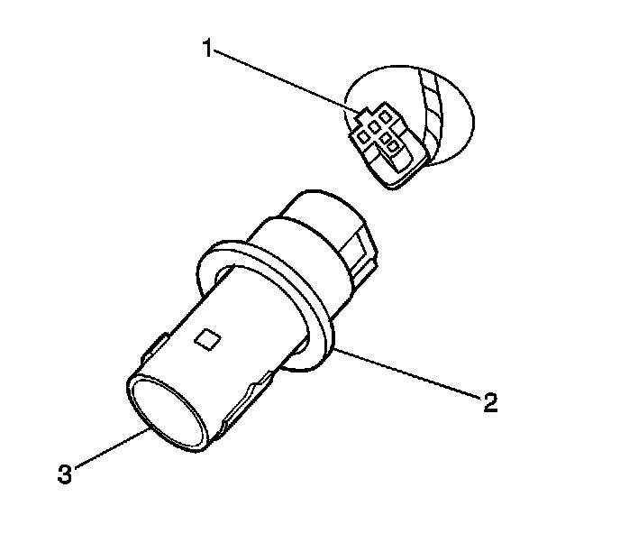
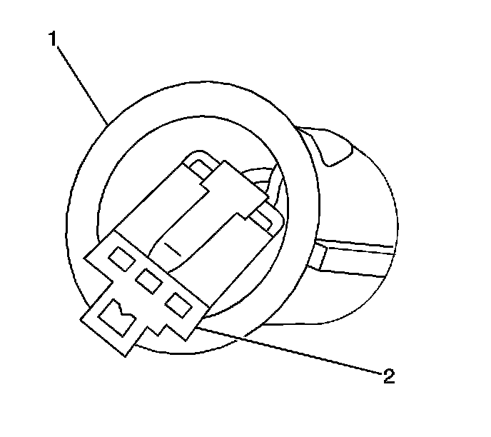
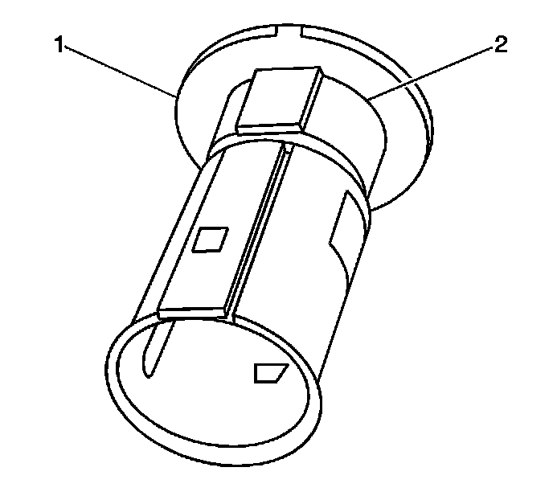
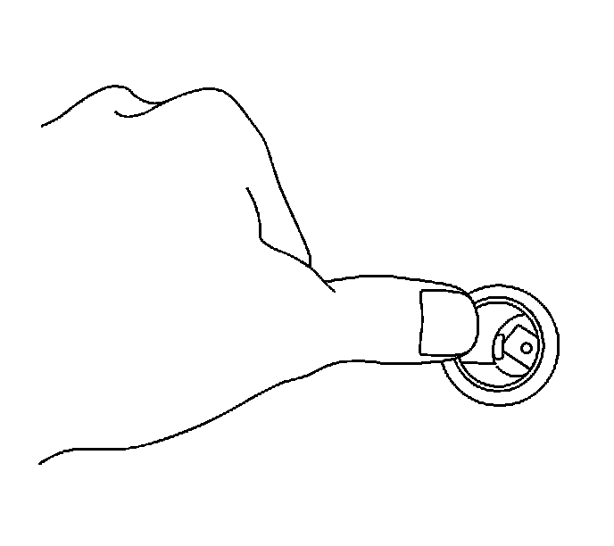

Floor Console Accessory Power Receptacle Replacement
Floor Console Accessory Power Receptacle Replacement
Tools Required
J 42059 Cigar Lighter Socket Remover
Removal Procedure

1. Remove the power outlet fuse.
2. Remove the power outlet housing by placing one side of the T portion ofJ 42059 into the tab window and the other side into the opposite tab window. Pull the lighter housing straight out.
3. Remove the tool from the power outlet housing.

4. Pull the housing (3) and the retainer (2) out of the console.
5. Disconnect the electrical connector (1) from the housing.
6. Remove the retainer from the housing.
Installation Procedure

1. Install the power outlet retainer (1) to the console, by pressing the retainer into place until fully seated.
2. Connect the electrical connector (2) to the retainer.

3. Align the housing (2) key way, to the key slot in the retainer ring (1).

4. Press the housing into place until the housing is fully seated.
5. Install the power outlet fuse.